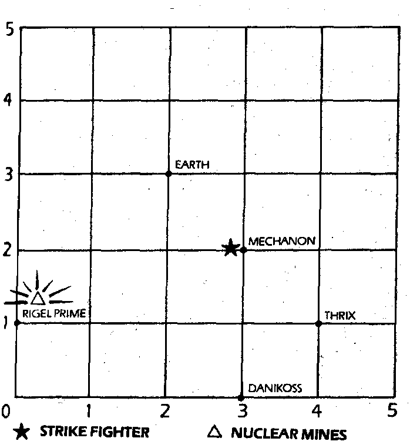

264
You arrive back at the point on the grid which corresponds to the timehole on Mechanon as the flare of nuclear explosion glares red on your face-up display at the other points on the grid. The blast at this point has died away but your Strike Fighter's radiation dampers are being steadily overloaded by the fallout from the atomic mine. You must leave the grid somehow, perhaps you can convince CAIN that you are not in the restricted grid of what to a computer is a 'fixed' universe. You must engage the Variac Drive once more, before the radiation reaches you. What coordinates will you type in this time?
| 0/ 5/ 5 | Turn to 310 |
| 1/ 0/ 0 | Turn to 295 |
| -2/ 4/ 1 | Turn to 286 |
| 0/-5/-5 | Turn to 279 |